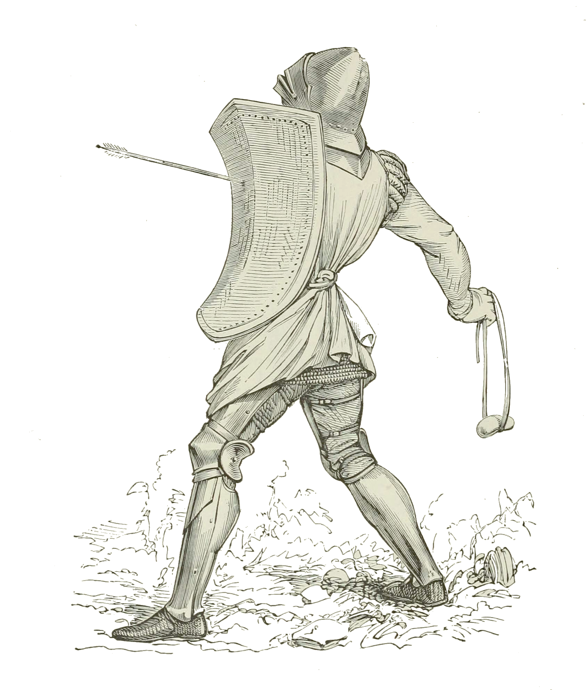

PCs have three abilities: Strength (STR), Dexterity (DEX), and Intelligence (INT).
Saves
If a character attempts something where the outcome is uncertain and failure has consequences, they need to make
a save.
To make a save, roll a d20 and add the most relevant ability's score.
If the total is at least 10, the character succeeds. If not, they fail.
Advantage and Disadvantage
If there are factors or abilities that make the save significantly easier or harder, the roll has either
advantage or disadvantage.
If a roll has advantage, roll 2d20 and use the better of the two dice.
If it has disadvantage, roll 2d20 and use the worse of the two dice.
Character Resources
Stress
Once per save, you may re-roll d20 and take 1 stress.
For every 1 stress above your intelligence, you get -1 to all saves.
For every full day of rest in safety, halve and round down your stress.
Hit Points
Hit points protect you from lethal damage. Subtract hit points when you take damage.
If you don’t have enough hit points, subtract the leftover damage from your strength. You die on 0 or less
strength.
For every full day of rest in safety, double your hit points (minimum of 1).
For every full week of rest in safety, recover 1 strength.
Exhaustion
Characters get 1 level of exhaustion:
- For each consecutive day without enough sleep (8 hours)
- For each consecutive day without enough clean water
- For each day without enough food
- For each day with more than 8 hours of travel
- For a week of travel without a full day of rest
Level
Effect (Cumulative)
1
No negative effects
2
Disadvantage on all saves
3
Takes double damage
4
Travels at half speed
5
Can’t travel. Can only crawl or walk with assistance.
6
Death
For each full day of rest in safety with enough food, water and sleep, recover 1 level of exhaustion
Inventory
PCs have a number of item slots equal to 10.
Most items take up 1 slot, but particularly heavy or bulky items may take up more slots.
Groups of small, identical items may be bundled into the same slot.
As a general guideline, a slot holds around 5 pounds of weight. A slot can hold 100 coins.
Armor
Armor Piece
AC Bonus
HP Bonus
Weight
Cost
Shield
2 (4)
5
1 st.
50 sp
Gambeson
2
10
1 st.
100 sp
Mail
4
20
2 st.
1000 sp
Armor Class (AC)
The armor you wear determines your AC and adds to your hit points. The base AC for unarmoured characters is
10.
Shields
A shield is made from wood or metal and is carried in one hand. Requires one hand to wield. While focusing
solely on defending, the wielder can impose disadvantage on any front facing attacks. While supported by a
shieldwall formation, the AC bonus is doubled against front facing attacks.
Gambeson
A padded armor that consists of quilted layers of cloth and batting
Mail
Armour made of interlocking metal rings. Should be worn on top of a gambeson to prevent chafing and to
cushion
the impact of blows. Imposes disadvantages to swimming.
Donning Time
It takes 1 minute to don or doff mail or gambeson. It takes 2 minutes to don or donoff both. Being assisted
halves the time it takes to don or donoff.
Weapons

Weapon Type
Properties
Damage
Weight
Cost
Daggers and Throwing Axes
Finesse, Thrown (20/60)
1d4
¼ st.
20 sp
Javelins
Thrown (60/120)
1d6
1 st.
5 sp
Spears
Thrown (20/60), Versatile (2d4), Long
1d6
2 st.
10 sp
Short Swords and Short Axes
Finesse
1d6
1 st.
100 sp
Long Swords and Long Axes
Versatile (2d6)
1d8
2 st.
150 sp
Slings
Range (60/120)
1d6
-
2 sp
Bows
Range (80/320), Two-handed
2d6
2 st.
200 sp
Melee
Melee attacks against targets without a melee weapon or equivalent to threaten the attacker have advantage.
This
applies most commonly against targets with ranged weapons such as bows or slings.
Range
A weapon that can be used to make a ranged attack has a range in parentheses after the ammunition or thrown
property. The range lists two numbers. The first is the weapon's normal range in feet, and the second
indicates
the weapon's long range
When attacking a target beyond normal range, you have disadvantage on the attack roll. You can't attack a
target
beyond the weapon's long range.
Thrown
If a weapon has the thrown property, you can throw the weapon to make a ranged attack. You can attempt to
throw
items (such as a bottle of acid) up to 20th by making a ranged attack roll against the target.
Damage Rolls
You roll the damage die or dice, add any modifiers, and apply the damage to your target. Unarmed strikes
deal 1
+ your Strength modifier in damage.
Some other items that are not weapons also have damage rolls, as listed in the item’s description.
Finesse
Allows you to exploit a foe's distraction or weak spot, dealing extra 2d6 damage to one creature you hit
with an
attack if you have advantage on the attack roll.
Versatile
This weapon can be used with one or two hands, dealing more damage when using two hands (two handed damage
in
parenthesis).
Long
Offers double the melee range of other weapons and can melee attack from behind shieldwall formations.
However,
due to its size, it can’t be easily carried without one hand and, while carried this way, imposes
disadvantage
on ability checks that rely on both hands like swimming and climbing.
Free Hand
When using a melee weapon in only one hand while having no weapon or shield in the other hand, you can use
your
Dexterity, instead of your Strength modifier, for the attack roll.
Two-Handed
This weapon requires two hands when you attack with it.
Improvised Weapons
Sometimes characters don't have their weapons and have to attack with whatever is at hand. An object that
can be
used to hurt but bears no resemblance to a weapon deals 1d4 damage